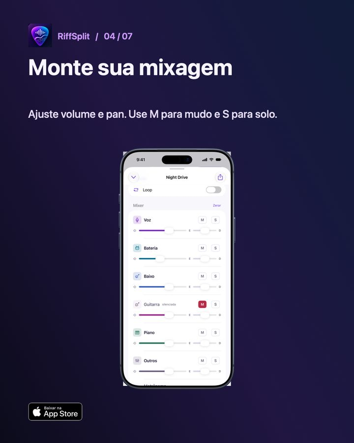

Como isolar o baixo de uma música no iPhone
Para ouvir só o baixo de uma música no iPhone, separe a música em faixas e deixe a faixa do baixo em solo. No RiffSplit isso acontece no próprio aparelho, sem internet: você importa o arquivo, o app separa voz, bateria, baixo, guitarra, piano e outros, e você toca em S na faixa do baixo. Para tocar no lugar do baixista, faça o contrário e toque em M para silenciar só o baixo.

Passo a passo no RiffSplit
- Importe a música: Toque em + Adicionar e escolha o arquivo no app Arquivos (MP3, AAC/M4A, ALAC, WAV, AIFF, FLAC ou vídeo).
- Espere a separação: O RiffSplit separa as 6 faixas no aparelho. Em um iPhone recente, uma música de 5 minutos leva menos de 1 minuto.
- Ouça só o baixo: No mixer, toque em S na faixa Baixo. As outras faixas ficam em silêncio.
- Ou tire o baixo: Toque em M na faixa Baixo para silenciar só ele e tocar a sua linha junto com o resto da banda.
- Desacelere se precisar: Baixe a velocidade para 70% ou 80% sem mudar o tom e repita o trecho com o loop A–B.
Dicas de baixista para tirar a linha de ouvido
- Comece pela nota que cai no tempo 1 de cada compasso: quase sempre é a fundamental do acorde.
- Deixe a bateria junto com o baixo (S nas duas faixas) para entender onde o bumbo e o baixo se encontram.
- Suba um pouco o volume do baixo e abaixe o resto em vez de deixar só o baixo: o contexto harmônico ajuda a confirmar a nota.
- Em linhas rápidas, use 70% de velocidade e volte para 100% aos poucos, de 10 em 10.
- Grave a sua versão por cima do playback sem baixo e compare com a original.
Perguntas frequentes
Funciona com músicas do Spotify ou do Apple Music?
Não. Músicas de streaming são protegidas por DRM e nenhum app consegue abri-las. Use arquivos seus ou com direito de uso.
Precisa de internet para separar o baixo?
Não. Todo o processamento acontece no iPhone, iPad ou Mac. A música não sai do aparelho.
Dá para exportar só a faixa do baixo?
Sim, com o desbloqueio do app: você exporta a mixagem ou cada faixa separada em AAC, WAV ou Apple Lossless.

Outros guias
Atualizado em 08/11/2026.